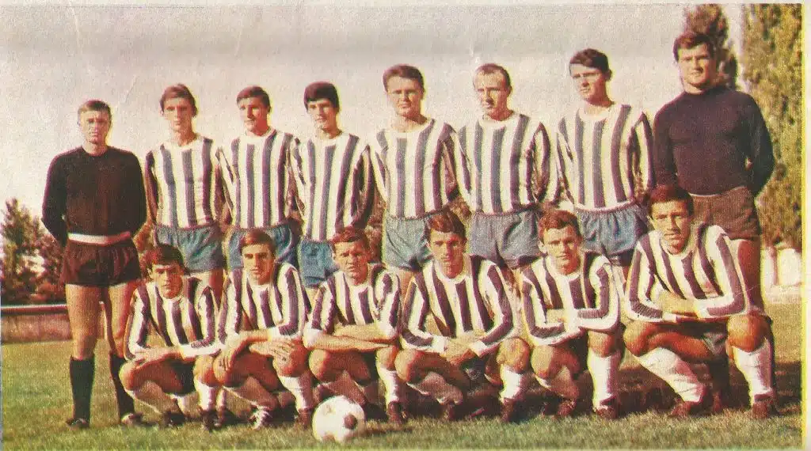
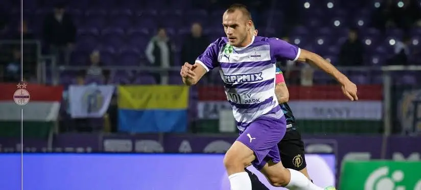

Mnogi fudbaleri i treneri ostavili su veliki trag u istoriji kluba, a navijači posebno pamte generaciju koja je izborila plasman u Superligu Srbije.

.png)
Slavko Maletin Vava bio je jedna od najvećih legendi OFK Bačke i čovek koji je gotovo ceo svoj život posvetio klubu iz Bačke Palanke. Fudbalsku karijeru započeo je sa samo 15 godina, a za prvi tim Bačke nastupao je jos tokom Drugog svetskog rata. Igrao je na poziciji golmana i bio je jedan od najboljih igrača svoje generacije u klubu.
Nakon završetka igračke karijere 1957. godine, Vava je ostao veran fudbalu kao sudija, a kasnije je obavljao brojne funkcije u OFK Bačkoj. Bio je tehnicki referent, funkcioner, predsednik kluba i na kraju počasni predsednik. Svojim radom i zalaganjem dao je ogroman doprinos razvoju kluba tokom više decenija.
Zbog svega sto je učinio za OFK Bačku, stadion kluba u Bačkoj Palanci danas nosi njegovo ime - Stadion Slavko Maletin Vava. Time je njegovo ime zauvek upisano u istoriju kluba i grada.
Slavko Maletin Vava ostao je upamćen kao simbol vernosti, ljubavi prema fudbalu i odanosti OFK Bačkoj. Mnogi ga smatraju najvećom legendom u istoriji kluba, a njegovo nasleđe i danas živi među navijačima i ljubiteljima fudbala u Bačkoj Palanci.

Miroslav Bjeloš je jedan od najpoznatijih fudbalera OFK Bačke u novijoj istoriji kluba. Rođen je 29. oktobra 1990. godine u Novom Sadu i igrao je na poziciji veznog igrača. Tokom svoje karijere više puta je nosio dres OFK Bačke i bio važan član ekipe u najuspešnijem periodu kluba.
Bjeloš je bio jedan od ključnih igrača generacije koja je 2016. godine izborila istorijski plasman OFK Bačke u Superligu Srbije, najviši rang domaćeg fudbala. Njegova borbenost, iskustvo i zalaganje na terenu učinili su ga jednim od miljenika navijača.
Tokom karijere nastupao je i za Radnički Šid, Napredak Kruševac, mađarski Ujpešt i Mladost Novi Sad, ali je upravo u OFK Bačkoj ostavio najdublji trag. Za klub iz Bačke Palanke odigrao je veliki broj utakmica kroz više različitih perioda i bio jedan od simbola uspeha kluba u 21. veku.
Zbog dugogodišnje povezanosti sa klubom, velikog broja nastupa i doprinosa najvećim uspesima OFK Bačke, Miroslav Bjeloš se smatra jednom od legendi moderne ere kluba i jednim od najznačajnijih fudbalera u novijoj istoriji Bačke.>